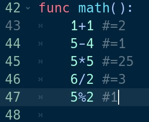
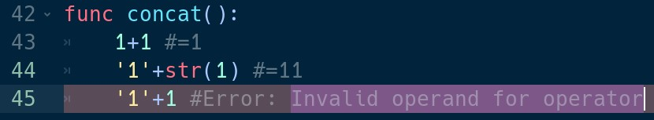

Математические операции идентичны операторам в математике и в других языках

Для сложения используется оператор ‘+’
Для вычитания используется оператор ‘-’
Для умножения используется оператор ‘*’
Для деления используется оператор ‘/’
Для получения остатка используется оператор ‘%’
Математический оператор сложения позволяет складывать числа и проводит конкатенацию строк. Если значения числового типа, то произойдёт сложение чисел. Если строкового – то выполниться конкатенация строк. Иначе выброситься ошибка ‘Invalid operand for operator’

Для Godot идентично использование таких операторов сравнение как меньше ‘<’, больше ‘>’, не больше ‘<=’, не меньше ‘>=’, равно ‘==’, не равно ‘!=’
Для конъюнкции используется оператор ‘and’ или ‘&&’
Для дизъюнкция используется оператор ‘or’ или ‘||’
Для импликации используется оператор ‘not’ или ‘!’
Результатом логический вычисления является, true или false
Функция приведения к логическому типу - bool(). Возвращает false, если первым параметром передать 0 (для int), 0.0 (float) или пустую строку